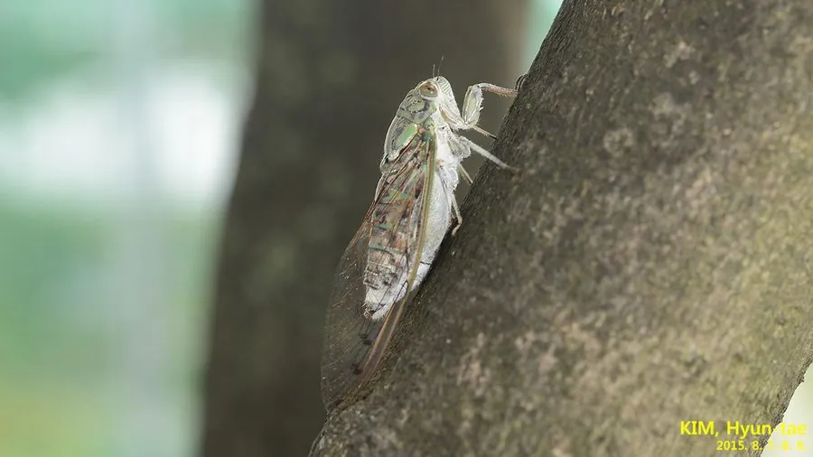

昆虫 · 动物界
蒙古寒蝉 Meimuna mongolica

中国北方夏秋常见的寒蝉，雄蝉在傍晚鸣叫，声音低沉连续，因秋凉时鸣叫而得名“寒蝉”，是北方最常见的蝉之一。
- 分类
- 门节肢动物门纲昆虫纲目半翅目科蝉科属寒蝉属
- 栖息环境
- 北方平原和山地的阔叶林、行道树和果园，成虫停在树干和枝条上
- 地理分布
- 中国北方和华北地区，是北京等地最常见的蝉之一
- 保护级别
- 暂无评估
物种志
蒙古寒蝉成虫体长 30–35 mm，体色灰绿或黄绿，翅透明、翅脉明显，雄蝉腹部有发达的发音器。若虫生活在土壤中，身体呈黄褐色，前足粗壮，适合挖掘。
蒙古寒蝉分布于中国北方和华北地区，常见于杨、柳、槐等树木上。若虫在土中生活数年，吸食树根汁液；成虫夏季羽化，停在树干和枝条上吸食汁液，雄蝉鸣叫求偶，傍晚最为活跃。它的鸣声低沉而连续，是北方夏末秋初的标志性背景音，人们常根据寒蝉的鸣叫判断季节变化。蝉蜕是中药材“蝉蜕”，是若虫羽化后留下的外壳。蝉在传统文化中常被用来寄托时光流逝的感慨。目前它没有IUCN 的正式评估，中国未将其列入国家重点保护野生动物名录。
形态与习性
- 食性成虫和若虫吸食树木汁液
- 体长30–35 mm
- 若虫在土中生活数年，吸食树根汁液
- 鸣叫雄蝉在傍晚鸣叫求偶，声音低沉连续
- 分布中国北方和华北地区
- 寿命成虫寿命约 1–2 个月，若虫期长达数年
趣味知识
- 蒙古寒蝉的鸣声低沉连续，是北方夏末秋初的标志性背景音。
- 它的若虫在地下生活数年，吸食树根汁液后才爬出地面羽化。
- 若虫羽化后留下的外壳就是中药“蝉蜕”。